刘轶
教授 · 课程负责人统筹课程与质量审校，主讲模块一、二。
循着一份宴会订单，读懂课程的设计、教学与实践。
从一份宴会订单出发，走进文化、设计与服务相互交融的学习空间。
让文化成为宴会的主题，
让专业落到每一次服务。
宴会设计需要审美与创意，也需要科学、严谨和协作。本课程以完整订单贯通需求分析、方案设计与现场服务，让菜单、台面、场景、流程和预案相互衔接。
在课程中查阅规范、比较案例，在虚拟情境中预演席位与动线，再用实物摆台和角色服务检验设计。每一次反馈，都回到方案的下一次修订。
申报书 V1.19：三、课程设计；五、智慧教学实施过程。序厅主题语为本展厅策展表达。
申报书：2026年重庆市职业教育智慧课程申报书（宴会设计与服务）V1.19，2026年10月11日。佐证材料：《宴会设计与服务》V2.9，2026年10月7日。
面向酒店管理与数字化运营专业，以宴会综合设计与服务能力连接课堂和岗位。
理解一场宴会，
从理解宾客开始。
2月7日在学银在线首次开课
获重庆市职业教育在线精品课程认定
拓展图谱学习、智能答疑与虚实训练
《宴会设计与服务》是酒店管理与数字化运营专业拓展必修课，32学时，第3学期开设，衔接《餐饮服务与数字化运营》《饮品制作与服务》和岗位实习。
围绕主题宴会、商务接待、婚宴、冷餐会、茶歇与酒会等情境，综合考虑客户需求、文化背景、成本、场地和服务条件。
学校与渝州宾馆等行业企业共同开发课程，把岗位流程、服务规范与企业反馈转化为教学任务及评价要求，融入巴渝饮食文化、涉外接待和跨文化沟通。
申报书 V1.19：三、课程设计；四、课程建设历程。佐证 V2.9：3-02 课程标准、4-02 市级在线精品课程认定。
申报书：2026年重庆市职业教育智慧课程申报书（宴会设计与服务）V1.19，2026年10月11日。佐证材料：《宴会设计与服务》V2.9，2026年10月7日。
以职业素养为基础，以专业知识为支撑，将设计能力落实为可解释、可执行的宴会方案。
不止完成设计，
也能说明设计的依据。
具备职业礼仪、沟通与信息分析意识，践行客户至上、规范服务和团队协作。理解传统与地方文化，树立劳动、责任、规则和安全意识，追求精益求精。
掌握宴会基础、菜品酒水与菜单、台面设计和中西式服务规范；理解主题与需求、文化、成本效益的关系；熟悉六步工作法、场景要素及预案内容。
能够开展需求采集、主题设定、菜单与酒水配置、成本核算、台面与场景设计，组织服务与活动流程，完成接待预演、风险识别和应急预案编制。
申报书 V1.19：三、课程设计“课程目标”。佐证 V2.9：3-02 课程标准，第258—279页。
申报书：2026年重庆市职业教育智慧课程申报书（宴会设计与服务）V1.19，2026年10月11日。佐证材料：《宴会设计与服务》V2.9，2026年10月7日。
8模块、23项目、55任务，按32学时、16周分阶段组织；前一阶段的成果，成为下一阶段的设计依据。
一张需求单，
串起一场宴会的全程。
课程从行业认知和宴会承接进入方案设计，再走向服务组织与风险预案。每个模块形成具体学习成果，最终汇成相互协调的宴会接待方案。
认识宴会设计工作过程与典型工作任务，从案例中识别需求、文化、菜单、台面、场景和服务要素。
学习成果：工作过程与典型任务关联图
分析宴会类型与背景，模拟预订沟通，核对宾客、时间、场地、预算和特殊需求。
学习成果：宴会预订表与客户需求记录
根据客户需求选择主题，完成宴会命名与主题词撰写，用文化内涵统筹后续设计。
学习成果：主题文化内涵说明书
配置菜点与酒水，完成菜品命名、成本核算和菜单制作，兼顾宾客习俗与节约要求。
学习成果：主题菜单、酒单与成本表
设计餐台与台面物品，组织中西式宴会摆台，统筹台型、席次和服务动线。
学习成果：摆台方案与台型席位图
分析光线、色彩、音乐和装饰，安排宴会厅功能分区，校核空间布局与服务要求。
学习成果：场景布局图与设计说明书
设计中西式宴会服务、酒水服务与活动流程，明确岗位分工及个性化服务措施。
学习成果：服务流程、活动时间轴与岗位分工
预演接待流程，识别风险，明确应急机构、预防措施和处置要求，依据反馈修订方案。
学习成果：风险清单、应急预案与整改记录
申报书 V1.19：三、课程设计。佐证 V2.9：3-02 课程标准；Obsidian“04-课程标准-32课时在线教学修订”在线课程教学内容与活动安排。
申报书：2026年重庆市职业教育智慧课程申报书（宴会设计与服务）V1.19，2026年10月11日。佐证材料：《宴会设计与服务》V2.9，2026年10月7日。
线上导学、虚拟预演、实物摆台与角色服务前后衔接。设计是否可行，要回到现场检验。
好方案，
经得起现场的检验。
查阅微课、案例和任务要求，分析宾客、预算、场地及服务条件，形成需求清单和初稿。
小组完成主题、菜单成本表、布局图和服务流程。在虚拟场景中预演，再以实物摆台、岗位轮换和角色服务核查通道、器具配置与服务衔接。
对照教师、同伴与行业导师反馈修订作品，说明修改理由。涉及器具、通道或程序的调整，通过再次操作复核。
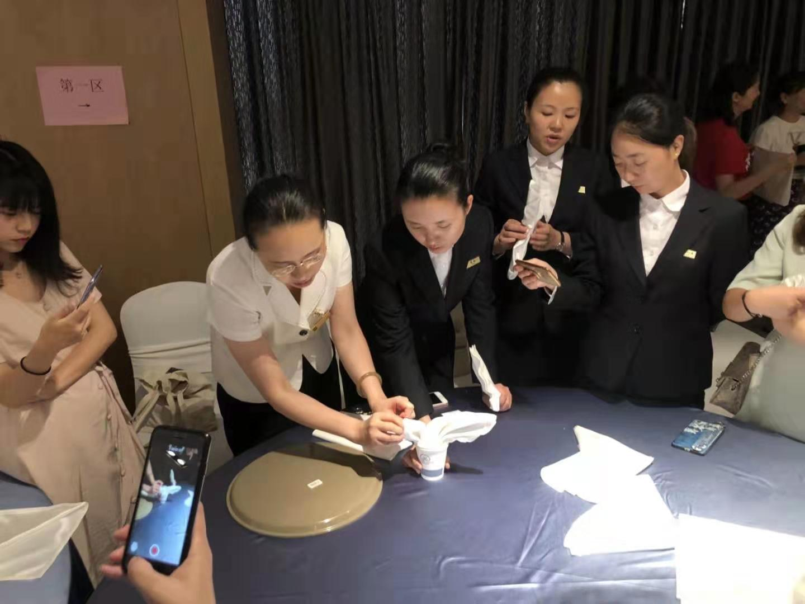
↗实训演示与观摩佐证 V2.9 · 5-56，第527页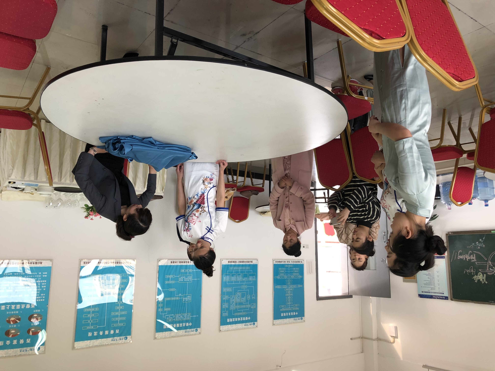
↗现场示范与交流佐证 V2.9 · 5-55，第526页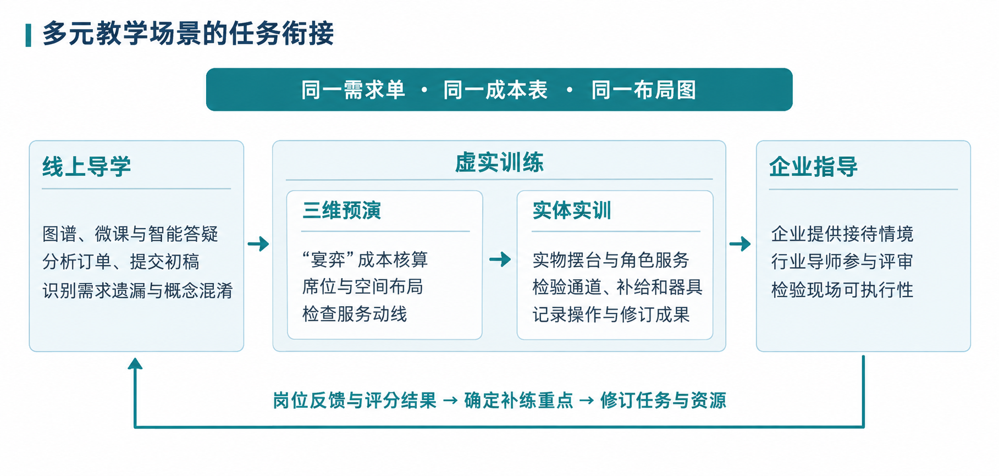
↗多元教学场景的任务衔接申报书 V1.19 · 图10申报书 V1.19：四、多元化教学场景搭建；五、智慧教学实施过程。六步工作过程见佐证 V2.9：5-19、5-20，第480—481页。
申报书：2026年重庆市职业教育智慧课程申报书（宴会设计与服务）V1.19，2026年10月11日。佐证材料：《宴会设计与服务》V2.9，2026年10月7日。
知识图谱、数字讲义与智能答疑服务于具体任务；专业结论由教师与行业导师复核。
智能工具支持探索，
专业判断始终有据。
以课程任务组织知识与技能，关联微课、文档、案例和考评内容，支持按任务查阅与补学。
课程在智慧职教平台形成数字讲义。AI学伴依托课程语料与问答支持查阅和比较，学生返回教材、标准与案例核对依据，教师审核成本、安全及礼仪结论。
将需求采集、菜单成本核算、三维摆台、场景布置和作品评价置于宴会任务中。虚拟预演与实物操作相互校核，关注方案能否执行。
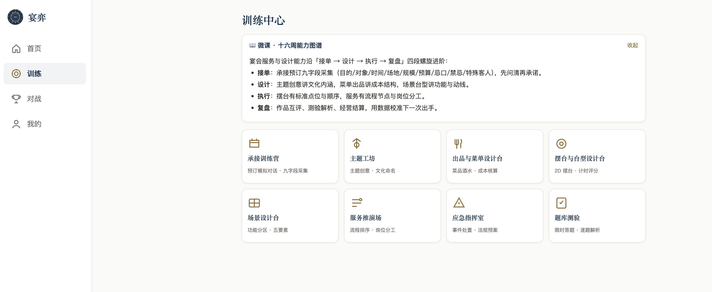
↗“宴弈”智慧实训平台 · 训练中心申报书 V1.19 · 图14，材料中的平台界面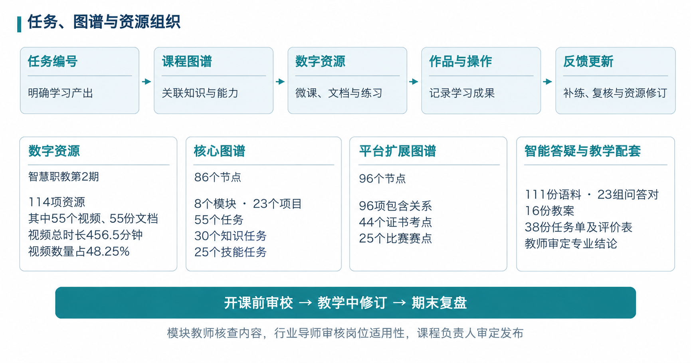
↗任务图谱与资源组织申报书 V1.19 · 图5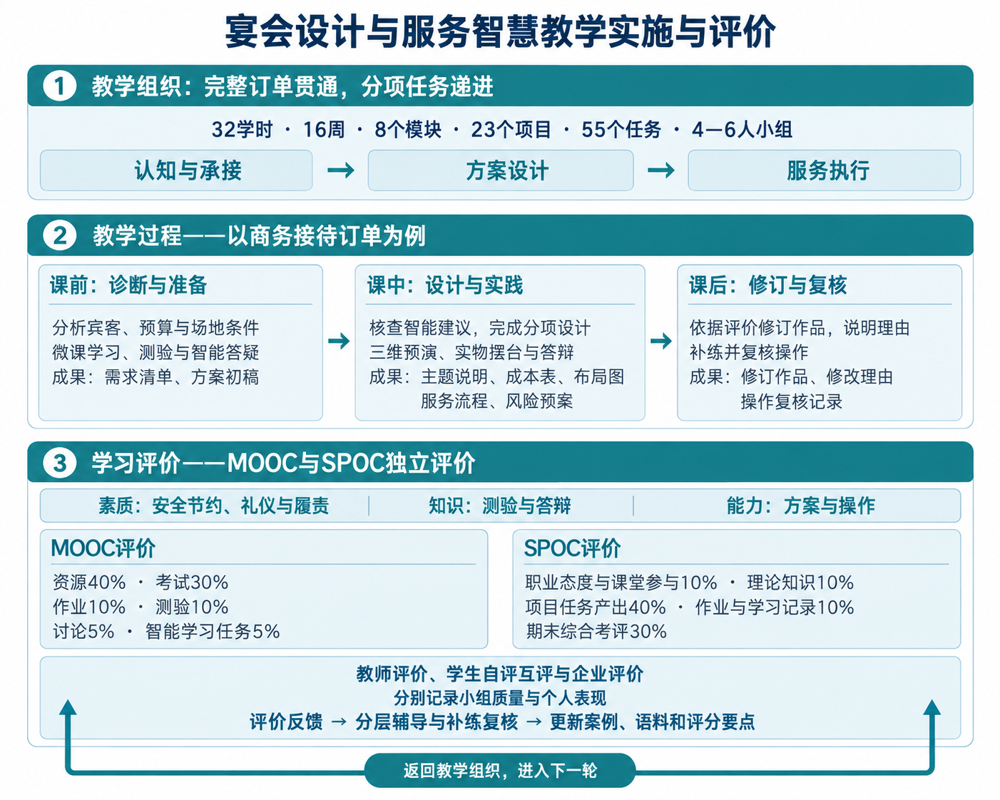
↗智慧教学实施与评价申报书 V1.19 · 图11展品展示材料中已有的课程资源与工具。视频理解、智能任务扩展等后续安排未列为本展厅已实现的功能。
申报书 V1.19：四、智慧资源建设应用；六、课程答疑与专业复核、虚实结合的方案设计与服务训练。
申报书：2026年重庆市职业教育智慧课程申报书（宴会设计与服务）V1.19，2026年10月11日。佐证材料：《宴会设计与服务》V2.9，2026年10月7日。
4名校内教师与1名行业导师，分工协作，共同开展课程教学、资源建设和岗位指导。
课堂的设计，
与岗位的经验相遇。
模块教师维护任务与资源，课程助教整理学习问题，行业导师核查岗位适用性，课程负责人审定内容与评价要求。把学生作品问题和企业反馈带回下一轮课程建设。
统筹课程与质量审校，主讲模块一、二。
主讲模块三、四，更新主题与菜单案例。
主讲模块五至八，负责虚实训练与过程评价。
平台维护、课程问答与学习支持。
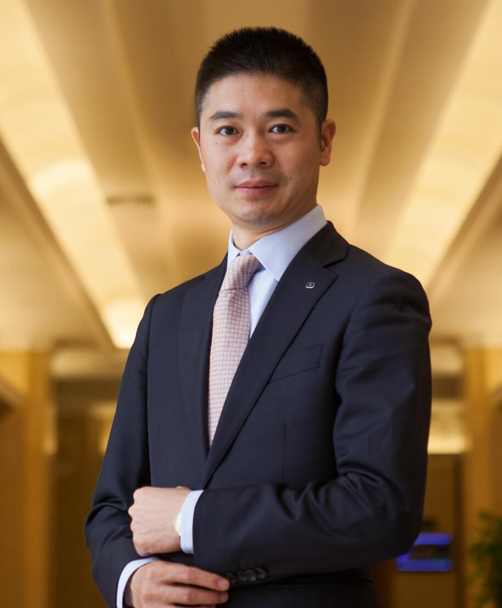
重庆市级首席技能大师；审核岗位标准，指导实操并参与企业评价。
申报书 V1.19：二、授课教师团队。佐证 V2.9：2-01、2-02、2-11、2-16、2-20。教师照片来自学银在线本课程公开介绍页，2026年10月13日读取。
申报书：2026年重庆市职业教育智慧课程申报书（宴会设计与服务）V1.19，2026年10月11日。佐证材料：《宴会设计与服务》V2.9，2026年10月7日。
课程认定、团队资源建设与学生赛训成果，共同呈现课程持续建设和专业育人的足迹。
每一份成果，
都有它的来处。
《宴会设计与服务》获认定。
佐证 V2.9 · 4-02，第354—356页
《宴会设计与服务》与《民宿管家核心职业能力提升》联合案例。
佐证 V2.9 · 6-01，第528页
高职组 · 酒水服务赛项。
佐证 V2.9 · 6-06，第533页
总决赛争夺赛 · 旅游赛道一。
佐证 V2.9 · 6-03，第530页
总决赛争夺赛 · 旅游赛道。
佐证 V2.9 · 6-04，第531页
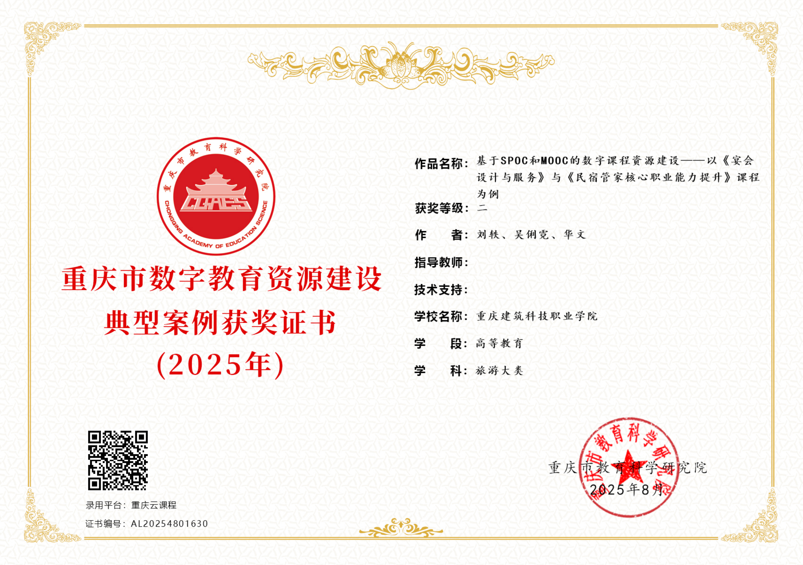
↗2025年数字教育资源建设典型案例二等奖佐证 V2.9 · 6-01，第528页 · 两门课程联合案例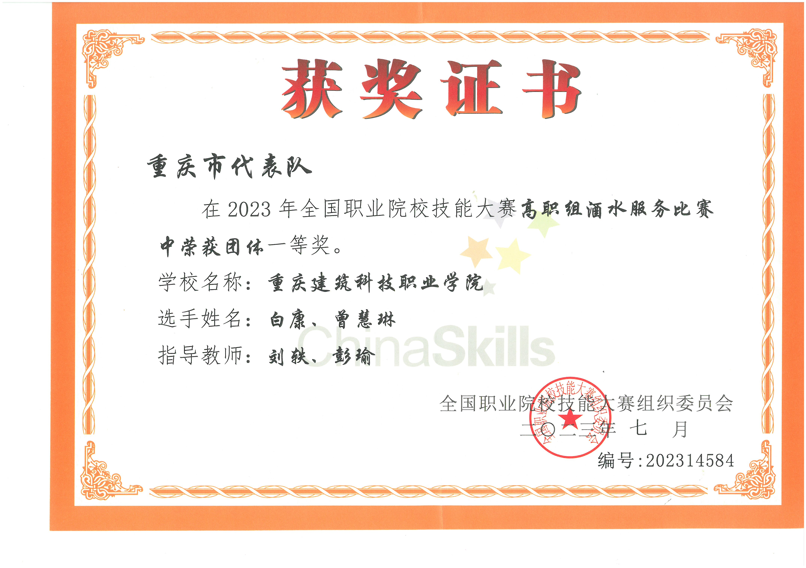
↗2023年酒水服务团体一等奖佐证 V2.9 · 6-06，第533页 · 学生赛训成果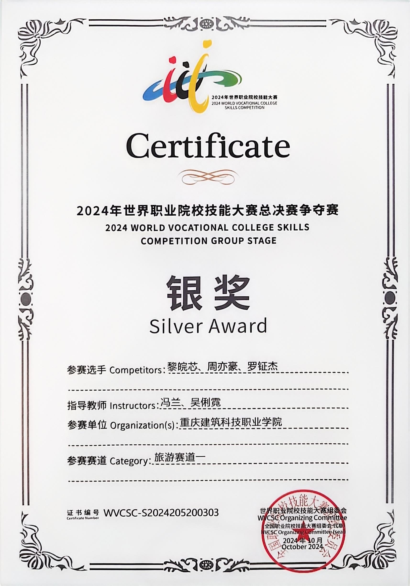
↗2024年旅游赛道一银奖佐证 V2.9 · 6-03，第530页 · 学生赛训成果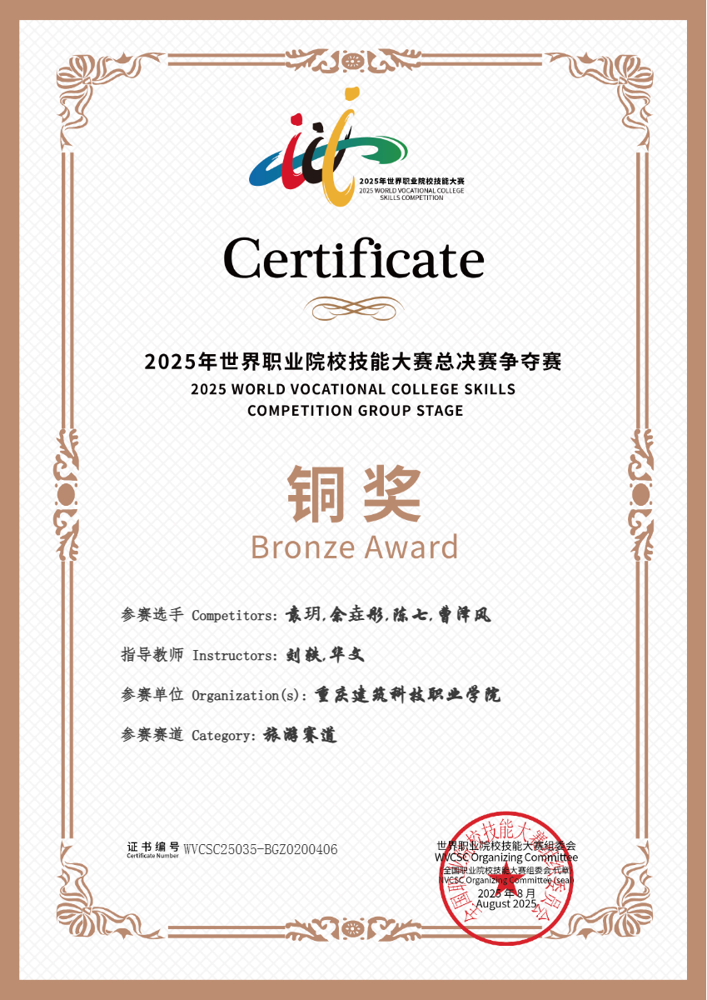
↗2025年旅游赛道铜奖佐证 V2.9 · 6-04，第531页 · 学生赛训成果佐证 V2.9：4-02、6-01、6-03、6-04、6-06。各项按证书及认定材料区分归属，未展示未经核验的2026年奖项。
申报书：2026年重庆市职业教育智慧课程申报书（宴会设计与服务）V1.19，2026年10月11日。佐证材料：《宴会设计与服务》V2.9，2026年10月7日。